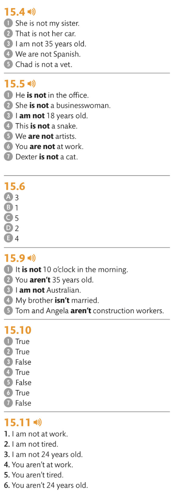

Negatives with “to be” / Негативы с «быть»
You make a sentence negative by using “not” or its short form “n’t” Negative sentences with the verb “to be” have different rules than negatives with other verbs.
Вы делаете предложение отрицательным, используя «не» или его краткую форму “n’t” Отрицательные предложения с глаголом «быть» имеют другие правила, чем отрицательные предложения с другими глаголами.
15.1 KEY LANGUAGE NEGATIVES WITH THE VERB “TO BE”
15.2 FURTHER EXAMPLES NEGATIVES WITH THE VERB “TO BE”
15.7 KEY LANGUAGE NEGATIVE SHORT FORMS
You can contract “you are not” in two ways. You can contract the subject and verb, or you can contract the verb and “not.”
Вы можете использовать “you are not” двумя способами. Вы можете сжать подлежащее и глагол или сжать глагол и «не».
15.8 FURTHER EXAMPLES NEGATIVE SHORT FORMS
15.9 FURTHER EXAMPLES FREQUENCY PHRASES
AUDIO15.10 READ THE BLOG AND ANSWER THE QUESTIONS
15.11 SUSE THE CHART TO CREATE 12 CORRECT SENTENCES AND SAY THEM OUT LOUD
Answers
